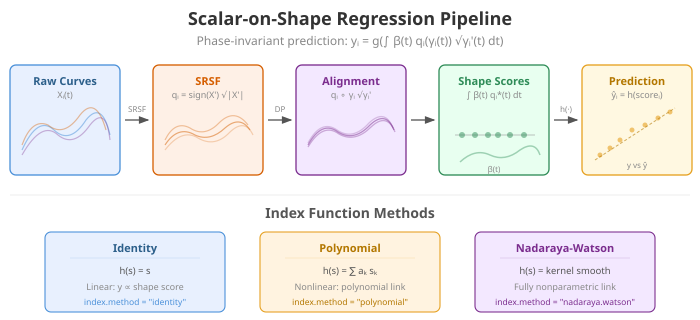

Introduction
Standard scalar-on-function regression assumes curves are well-aligned before analysis. When functional predictors contain phase variation — differences in the timing of features like peaks, valleys, or inflection points — standard methods confound shape with timing. The estimated coefficient function becomes blurred, and predictive power drops.
scalar.on.shape() solves this by building a regression
model that is invariant to phase variation. It uses the
Fisher-Rao elastic framework to separate shape (amplitude after
alignment) from timing (warping), then regresses the scalar
response on the shape of each curve.

When to Use Scalar-on-Shape
| Scenario | Recommended method |
|---|---|
| Curves well-aligned, linear relationship | fregre.lm() |
| Curves misaligned, response depends on amplitude | elastic.regression() |
| Curves misaligned, response depends on shape (phase-invariant) | scalar.on.shape() |
| Unknown alignment quality | Compare all three |
Key insight: elastic.regression()
aligns curves then regresses on amplitude.
scalar.on.shape() goes further — it extracts a
phase-invariant shape score via the Fisher-Rao inner product,
then maps that score to the response through a flexible index function.
This makes it robust even when the predictive signal lives entirely in
shape.
The Scalar-on-Shape Model
Mathematical Formulation
Given functional observations and scalar responses , the model proceeds in four stages.
1. SRSF transformation. Each curve is mapped to its square-root slope function (SRSF):
The SRSF representation makes the distance between transformed curves equal to the Fisher-Rao distance between original curves.
2. Elastic alignment. Each SRSF is aligned to a shape index function via dynamic programming, producing optimal warping functions :
3. Shape scores. Each aligned curve is projected onto the shape index function:
These scalar shape scores capture how much of the common shape pattern each curve exhibits, invariant to timing.
4. Index function. The response is linked to the shape score through a flexible function :
The index function can be the identity (linear), a polynomial, or a Nadaraya-Watson kernel smoother.
Iterative Optimization
The shape index , warping functions , and link function are estimated jointly by alternating:
- Fix and , update each via DP alignment
- Fix ’s, update via penalized least squares on the Fourier basis
- Fix and ’s, update (polynomial fit or kernel smooth)
The algorithm converges when the relative change in SSE falls below
tol.
Simulating Data with Phase Variation
We simulate a biomechanics-inspired scenario: 100 ground reaction force curves with both amplitude and phase variation. The scalar response (e.g., vertical jump height) depends on the shape of the force curve, not its timing or scale.
library(fdars)
library(ggplot2)
theme_set(theme_minimal())
set.seed(42)
n <- 100
m <- 80
t_grid <- seq(0, 1, length.out = m)
# Template: ground reaction force profile with two peaks
template <- function(s) {
0.8 * exp(-40 * (s - 0.3)^2) + 1.2 * exp(-30 * (s - 0.7)^2)
}
X <- matrix(0, n, m)
y <- numeric(n)
for (i in 1:n) {
# Shape variation: relative height of the two peaks
shape_param <- rnorm(1, 0, 0.5)
# Phase variation: random nonlinear warp
a <- runif(1, 0.6, 1.8)
b <- runif(1, 0.6, 1.8)
gamma <- pbeta(t_grid, a, b)
# Build the curve: shape variation + warp + noise
base <- 0.8 * exp(-40 * (t_grid - 0.3)^2) * (1 + 0.3 * shape_param) +
1.2 * exp(-30 * (t_grid - 0.7)^2) * (1 - 0.2 * shape_param)
# Apply phase warp
X[i, ] <- approx(t_grid, base, xout = gamma, rule = 2)$y +
rnorm(m, sd = 0.03)
# Response depends on shape, not timing
y[i] <- 3 * shape_param + rnorm(1, sd = 0.5)
}
fd <- fdata(X, argvals = t_grid)The response
depends on shape_param, which controls the relative height
of the two peaks. The nonlinear warping (pbeta) shifts peak
locations randomly, creating phase variation that is unrelated
to
.
plot(fd, main = "Simulated Ground Reaction Force Curves",
xlab = "Normalized Time", ylab = "Force (BW)")Fitting the Model
Identity Index (Linear Link)
The simplest model uses index.method = "identity", which
assumes a linear relationship between the shape score and the
response.
fit_id <- scalar.on.shape(fd, y, nbasis = 11, lambda = 1e-3,
index.method = "identity",
max.iter.outer = 15, tol = 1e-4)
print(fit_id)Polynomial Index (Nonlinear Link)
When the relationship between shape score and response may be
nonlinear, use a polynomial index with
index.method = "polynomial":
fit_poly <- scalar.on.shape(fd, y, nbasis = 11, lambda = 1e-3,
index.method = "polynomial",
index.param = 3, # cubic polynomial
max.iter.outer = 15, tol = 1e-4)
print(fit_poly)Nadaraya-Watson Index (Fully Nonparametric Link)
For maximum flexibility, the Nadaraya-Watson kernel smoother makes no parametric assumptions about :
fit_nw <- scalar.on.shape(fd, y, nbasis = 11, lambda = 1e-3,
index.method = "nadaraya.watson",
index.param = 0.5, # bandwidth
max.iter.outer = 15, tol = 1e-4)
print(fit_nw)Comparing Index Methods
comp_index <- data.frame(
Method = c("Identity (linear)", "Polynomial (cubic)", "Nadaraya-Watson"),
R2 = round(c(fit_id$r.squared, fit_poly$r.squared, fit_nw$r.squared), 4),
SSE = round(c(fit_id$sse, fit_poly$sse, fit_nw$sse), 2),
Outer_Iter = c(fit_id$n.iter.outer, fit_poly$n.iter.outer,
fit_nw$n.iter.outer)
)
knitr::kable(comp_index, caption = "Index method comparison")When the true relationship is linear (as in our simulation), the identity index should perform well. Polynomial and NW indices add flexibility at the cost of potential overfitting on small samples.
Examining the Fitted Model
# Shape index function beta(t)
df_beta <- data.frame(t = t_grid, beta = fit_id$beta)
ggplot(df_beta, aes(x = t, y = beta)) +
geom_line(color = "#4A90D9", linewidth = 1.2) +
labs(title = "Estimated Shape Index Function",
subtitle = "beta(t): the shape pattern that predicts y",
x = "Normalized Time", y = expression(beta(t)))The shape index reveals which aspects of curve shape drive the response. Peaks in correspond to regions where the curve shape is most predictive.
# Shape scores vs observed response
df_scores <- data.frame(score = fit_id$shape.scores, y = y)
ggplot(df_scores, aes(x = score, y = y)) +
geom_point(color = "#2E8B57", alpha = 0.6, size = 2) +
geom_smooth(method = "lm", se = FALSE, color = "#D55E00",
linetype = "dashed", linewidth = 0.8) +
labs(title = "Shape Scores vs Response",
subtitle = paste("R-squared =", round(fit_id$r.squared, 3)),
x = "Shape Score", y = "Response (y)")Prediction
# Hold-out evaluation
set.seed(123)
train_idx <- sample(n, 70)
test_idx <- setdiff(1:n, train_idx)
fd_train <- fd[train_idx, ]
fd_test <- fd[test_idx, ]
y_train <- y[train_idx]
y_test <- y[test_idx]
fit_train <- scalar.on.shape(fd_train, y_train, nbasis = 11, lambda = 1e-3,
index.method = "identity",
max.iter.outer = 15, tol = 1e-4)
y_pred <- predict(fit_train, fd_test)
cat("Test RMSE:", round(sqrt(mean((y_test - y_pred)^2)), 4), "\n")
cat("Test R2:", round(1 - sum((y_test - y_pred)^2) /
sum((y_test - mean(y_test))^2), 4), "\n")Comparison with Other Methods
We compare three regression approaches on our phase-variable data to demonstrate when scalar-on-shape regression is the right tool.
Standard Regression (Ignoring Phase)
fregre.lm() treats the raw (misaligned) curves as input.
Because FPCA captures the dominant phase variation first, the
shape signal that drives
is buried in higher-order components.
Elastic Regression (Alignment-Aware)
elastic.regression() jointly aligns curves and fits a
coefficient function. It captures amplitude variation after alignment,
but does not extract a phase-invariant shape score.
fit_elastic <- elastic.regression(fd_train, y_train, ncomp.beta = 5,
lambda = 0.01, max.iter = 20, tol = 1e-3)
pred_elastic <- predict(fit_elastic, fd_test)
cat("elastic.regression R-squared (train):",
round(fit_elastic$r.squared, 4), "\n")
cat("elastic.regression RMSE (test):",
round(sqrt(mean((y_test - pred_elastic)^2)), 4), "\n")Scalar-on-Shape (Full Phase-Invariant)
scalar.on.shape() extracts a phase-invariant shape score
via the Fisher-Rao inner product, giving it the cleanest signal when
depends on shape.
Summary Table
rmse_std <- sqrt(mean((y_test - pred_std)^2))
rmse_elastic <- sqrt(mean((y_test - pred_elastic)^2))
rmse_sos <- sqrt(mean((y_test - pred_sos)^2))
r2_test <- function(actual, predicted) {
1 - sum((actual - predicted)^2) / sum((actual - mean(actual))^2)
}
comparison <- data.frame(
Method = c("fregre.lm (standard)",
"elastic.regression",
"scalar.on.shape"),
Handles_Phase = c("No", "Yes (alignment)", "Yes (shape score)"),
Train_R2 = round(c(fit_std$r.squared,
fit_elastic$r.squared,
fit_train$r.squared), 4),
Test_RMSE = round(c(rmse_std, rmse_elastic, rmse_sos), 4),
Test_R2 = round(c(r2_test(y_test, pred_std),
r2_test(y_test, pred_elastic),
r2_test(y_test, pred_sos)), 4)
)
knitr::kable(comparison, caption = "Method comparison on phase-variable data")Visualizing Predictions
df_pred <- data.frame(
Observed = rep(y_test, 3),
Predicted = c(pred_std, pred_elastic, pred_sos),
Method = rep(c("fregre.lm", "elastic.regression", "scalar.on.shape"),
each = length(y_test))
)
ggplot(df_pred, aes(x = Observed, y = Predicted)) +
geom_point(alpha = 0.7, color = "#4A90D9") +
geom_abline(slope = 1, intercept = 0, linetype = "dashed", color = "gray50") +
facet_wrap(~ Method) +
labs(title = "Observed vs Predicted by Method",
x = "Observed", y = "Predicted")When to Use Which Method
| Criterion | fregre.lm |
elastic.regression |
scalar.on.shape |
|---|---|---|---|
| Phase variation | Ignores it | Removes via alignment | Invariant via shape score |
| Signal source | Raw curve values | Amplitude after alignment | Shape (Fisher-Rao inner product) |
| Link to response | Linear (FPC scores) | Linear ( integral) | Identity / polynomial / NW |
| Diagnostics | Full (explainability, influence, etc.) | R-squared, residuals | R-squared, residuals |
| Speed | Fast | Moderate (iterative alignment) | Moderate (iterative alignment) |
| Best for | Well-aligned curves | Misaligned; amplitude signal | Misaligned; shape signal |
Decision rule:
- If curves are well-aligned or phase variation is small, use
fregre.lm(). It has the richest diagnostics and explainability support. - If curves are misaligned and the response depends on
amplitude (overall scale or height differences), use
elastic.regression(). - If curves are misaligned and the response depends on shape
(the functional form after removing timing and scale), use
scalar.on.shape(). - When unsure, fit all three and compare hold-out RMSE.
Tuning Parameters
| Parameter | Default | Role | Guidance |
|---|---|---|---|
nbasis |
11 | Fourier basis dimension for | Increase for complex shapes; odd values recommended |
lambda |
1e-3 | Roughness penalty on | Increase to smooth ; decrease to capture detail |
index.method |
"identity" |
Link function type | Start with identity; try polynomial if nonlinear |
index.param |
2 | Polynomial degree or NW bandwidth | Higher = more flexible (risk of overfitting) |
g.degree |
2 | Amplitude link polynomial degree | Usually left at default |
dp.lambda |
0 | DP alignment penalty | Increase to discourage extreme warps |
max.iter.outer |
10 | Outer loop iterations | 10–20 usually sufficient |
tol |
1e-4 | Convergence threshold (relative SSE change) | Tighter = more iterations, better fit |
References
Srivastava, A., Klassen, E., Joshi, S.H. and Jermyn, I.H. (2011). Shape Analysis of Elastic Curves in Euclidean Spaces. IEEE Transactions on Pattern Analysis and Machine Intelligence, 33(7), 1415–1428.
Tucker, J.D., Wu, W. and Srivastava, A. (2013). Generative Models for Functional Data Using Phase and Amplitude Separation. Computational Statistics & Data Analysis, 61, 50–66.
Xie, W., Kurtek, S., Bharath, K. and Sun, Y. (2017). A Geometric Approach to Visualization of Variability in Functional Data. Journal of the American Statistical Association, 112(519), 979–993.
See Also
-
vignette("articles/elastic-regression")— elastic scalar-on-function regression and logistic classification -
vignette("articles/scalar-on-function")— standard scalar-on-function regression methods -
vignette("articles/elastic-alignment")— curve alignment without regression -
vignette("elastic-fpca")— elastic FPCA for amplitude/phase separation